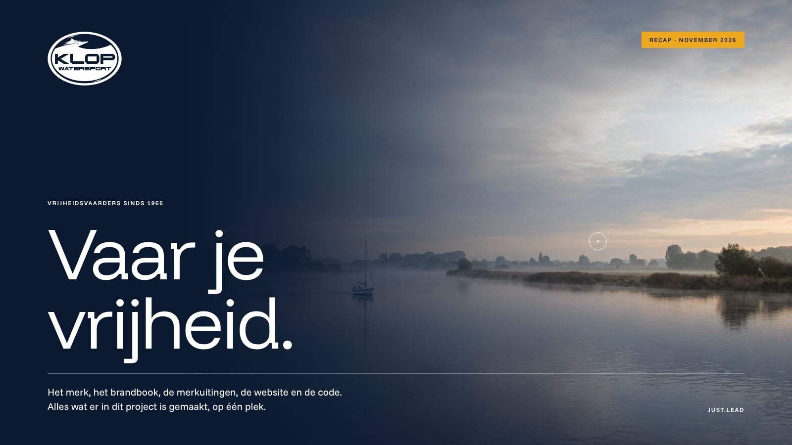

Het hele traject in één bestand: het verhaal, het merk, de bouwstenen, het merk in de praktijk, de nieuwe website en de techniek eronder. Scroll door, of kies direct een onderdeel.
16 slides: strategie, merkverhaal en de gemaakte keuzes.
Bekijk → 02 · Het merkBrandbook52 pagina's, van merkkern tot spelregels voor beeld en taal.
Bekijk → 03 · De bouwstenenDesignsysteemKleur, type, ruimte, 26 iconen en 22 componenten.
Bekijk → 04 · In het wildMerkuitingen42 ontwerpen, van servicepas tot campagne en bedrijfswagen.
Bekijk → 05 · Het resultaatWebsiteDe klikbare site, nu met de showroom centraal op de homepage.
Open de site → 06 · Het hulpmiddelConfiguratorAlle 32 Maxima-modellen en de andere merken, te bewaren in Mijn Klop.
Bekijk → 07 · De techniekCodeWordPress, SEO en GEO, configurator, CRM en de architectuur met ERP en CAD.
Bekijk → 08 · Het modelPowermarketingMarketing, sales, code en change tegen bereik, kliks, leads en sales. Wat gaat er aan?
Bekijk →Eén belofte, volledig uitgewerkt. Klik door de slides met de pijlen of je pijltjestoetsen.

Positionering, kernwaarden, tone of voice en alle spelregels voor logo, kleur, typografie, het gele label en fotografie. Klik op een pagina om hem groot te bekijken.
Eén bron voor kleur, type, ruimte, vorm, iconen en componenten. Site en uitingen worden hiermee gebouwd.
#F5F7F8Merkkleur Gelcoat. Standaard pagina-achtergrond.
#0B1930Merkkleur Nachtblauw. Tekst, donkere vlakken, knoppen.
#EFA91FMerkkleur Oliegoed (geel). Betekent alleen 'geregeld': labels, status, vinkjes. Eén gele accent per scherm.
#14284ADiep blauw. Tweede donker vlak, hover op Nachtblauw.
#DDE3E8Mist. Lijnen en vlakken op lichte achtergrond.
#AAB3BDChroom. Secundaire tekst op donker, randen.
#566373Staal. Secundaire tekst op licht (contrast 5.7:1 op Gelcoat).
#FFFFFFWit. Kaarten op Gelcoat, logo-plaat op foto's.
Funnel Display weight 300 voor koppen, Funnel Sans voor tekst.
Hero op home. Altijd weight 300.
Sectiekoppen.
Subkoppen, service-onderdelen.
Kaarttitels.
Inleiding onder een kop.
Lopende tekst.
Meta, bijschriften.
Sectielabel met open cirkel, knoptekst.
space-1 | 8px | Kleine tussenruimte. |
space-2 | 16px | Binnenruimte kleine elementen. |
space-3 | 24px | Kaartpadding. |
space-4 | 40px | Gutter tussen kaarten. |
space-5 | 72px | Sectie-ruimte (compact). |
space-6 | 120px | Sectie-ruimte (ruim). |
radius-0 | 0 | Alleen invoervelden (lijn onderaan) en volle paginabanden. |
radius-water | 22px | Waterlijn-vorm voor foto's, kaarten, vlakken en het zoekblok. Zacht, nooit scherp. |
radius-kader | 14px | Waterlijst-kader binnen een foto (hairline 14px naar binnen). |
radius-pill | 999px | Knoppen, chips, labels, badges en kleurstalen. |
container | 1320px | Standaard breedte van de inhoud. |
container-breed | 1560px | Overzichten met veel kolommen: boten en vergelijken. |
nav-hoogte | 84px | Hoogte van de hoofdnavigatie. |
pad | 56px | Zijruimte op desktop. Op mobiel 20px. |
Booking-stijl resultaatkaart: foto links met label (Laagste prijs, Langste boot, Gunstigste prijs per meter, alleen berekend uit echte data), midden specificaties met iconen, rechts prijs, prijs per meter, indicatieve maandlast met voetnoot, Bekijk boot en Vergelijk. Filters hebben live aantallen, actieve filters zijn chips, sorteren is e
Knop in twee delen: label links, pijlcel rechts, gescheiden door een haarlijn. Hoogte 48px (klein 40px), rechthoekig, geen afronding. Hover: nachtblauwe vulling schuift van onderen omhoog, de pijl schuift 4px op. Varianten: lijn (secundair), solid (primair, één per scherm), wit en licht (op foto of donker), premium. Premium: altijd Olie
Bootkaart: foto in waterlijst-kader (4:3), merk en type, titel, prijs in Funnel Display 300. Geen schaduw, geen radius. Favoriet- en vergelijk-knoppen rechtsboven.
Foto-tegel voor een categorie of subcategorie (type boot, nieuw en gebruikt). Elke categorie en subcategorie heeft een foto. Op de bootpagina en de merkpagina staan ze in een rij; op mobiel een horizontale scroller. Naam onderin in wit op de foto, met een donkere onderrand voor leesbaarheid (4.5:1).
Waterlijst-fotokader: witte hairline 14px binnen de rand, open cirkel rechtsonder. Bij hover trekt de lijn naar 22px. Voor alle foto en bootbeelden.
Lijnicoon uit de Klop-set. Gebruik de inline SVG met currentColor, zodat het icoon de tekstkleur volgt (Nachtblauw op licht, wit op donker). Maten: 24 px in navigatie, 36 px in tegels, 48 tot 56 px boven een kop. Lijn is altijd 1.25 px, niet schalend. Nooit geel: geel blijft voor het label "geregeld". Combineer niet met iconen u
Gele label met afgeschuinde hoeken en een open oogje, links met 14px afstand tot de rand en 30px voorruimte voor de tekst. Klop Premium Service™ is altijd een Oliegoed-label, op elke achtergrond en in elke sectie. Overige koppen krijgen een gewoon label met open cirkel in grijs.
Uitklapmenu onder Boten, Showroom, Klop Premium Service en Over ons. Volgorde van de hoofdnavigatie: Boten, Showroom, Klop Premium Service, Over ons. Onder Boten staan merken met logo op een witte plaat en soorten boten met foto, geen losse tekstlijst. Tegels hebben radius-water. Alleen zichtbaar vanaf 1180px; daaronder werkt het mobiele
Opening van een merkpagina: grote foto met het logo op een witte plaat, merkverhaal in een korte alinea, daarna type-tegels, uitgelichte boten in afwisselende rijen, galerij van 8 (of 4) foto's en een slotbanner. Knoptekst: "Bekijk alle n boten van <merk>"; bij één boot "Bekijk de boot van <merk>". Max
Foto-tegel voor een merk (radius 22px). Het kleurenlogo staat op een witte plaat linksboven, nooit direct op de foto. Onderin de merknaam en het aantal boten. De laatste tegel in een raster is geel ("Alle n boten"), het enige gele accent in dat raster.
Opening van Mijn Klop: Nachtblauw vlak (radius 22px) met begroeting in weight 300, korte alinea en twee pillen (Plan service geel, Maak afspraak omlijnd), rechts een foto van de eigen boot. Eronder drie cijfertegels (volgende afspraak, voortgang checklist, serviceverzoeken). In de demo-omgeving staan alleen voorbeeldgegevens, nooit verzon
Actietegel in Mijn Klop (Serviceplanner, Afspraken, Seizoenschecklist, Logboek, Documenten, Klop Premium Service™). Wit vlak, radius-kader 14px, titel in Funnel Display 300, korte regel in Staal en onderaan "Open" met een gele hairline. De tegels voor Klop Premium Service™ zijn informatief ("Onderdeel van je pakket") e
Hoofdnavigatie: Boten, Vrijheidsroutes, Klop Premium Service, Over Klop, Mijn Klop, favorieten en één CTA. Megamenu per groep. Transparant over hero, gelcoat bij scroll.
Venster bij "Bewaar als PDF" in de vergelijkingstool. Vraagt een e-mailadres (leadmoment) met een vinkje dat een adviseur contact mag opnemen. Daarna opent het printvenster met een A4-liggend overzicht: Klop-kop met datum en ontvanger, gele hairline, vergelijkingstabel. Navigatie, voet en trays zijn verborgen. Primaire knop is g
Volle gele band op de home, één keer per pagina. Een bewegende band met de vier onderdelen bovenin, de nachtblauwe pil Klop Premium Service™ (klikbaar), de kop "Wij regelen het gedoe. Jij vaart.", een foto met waterlijst-kader, de persoonskaart van het vaste aanspreekpunt (foto, naam, bellen, WhatsApp) en vier fototegels: Onderh
Op de bootpagina: de prijs van deze boot als gele stip tussen alle boten van het type (laagste tot hoogste), de plek (Nr. x van n), prijs per meter ten opzichte van de middelste waarde, en twee vergelijkbare boten met het verschil. Alleen berekend uit de eigen voorraad.
Kleine afgeronde keuzetegel met icoon (radius 18px) voor de vaardersvinder: type boot, wat je zoekt op het water, budget. Geselecteerd: nachtblauw met gele icoonlijn.
Vaarspoor: dunne golflijn als scheiding tussen secties. Tekent zich van links naar rechts als hij in beeld komt.
Tabel met tot drie boten. Per rij krijgt de beste waarde een gele markering en het woord Beste (laagste prijs, laagste prijs per meter, langste, nieuwste, direct leverbaar). Schakelaar Alleen verschillen. Vaste kop met foto, prijs en Plan proefvaart. Onderbalk met miniaturen.
Nachtblauwe pill met gele stip en de tekst "Op voorraad", linksonder op de foto van een boot die op voorraad is. Op kaart, lijstkaart en uitgelichte boot. Boten op bestelling krijgen geen badge. Wit op Nachtblauw haalt ruim 4.5:1.
Seizoenschecklist met vier seizoenen (Voorjaar, Zomer, Najaar, Winter). Afvinken bewaart direct; de balk toont "n van m afgerond". Balk: 10px hoog, pill, Oliegoed op Mist. Geel betekent hier "geregeld", dus alleen het afgeronde deel is geel.
Hoe het merk er in de praktijk uitziet: voor de klant, op locatie, online, in de campagne en onderweg.
Alle 47 beelden van de merkuitingen naast het brandbook, het designsysteem en de site gelegd. Het idee per uiting is sterk; de uitvoering nog niet. Hieronder wat er mis is, wat we per beeld doen en hoe we het maken.
De kern: de generator heeft alles in één keer getekend, ook letters, logo en schermen. Juist die onderdelen moet je niet laten tekenen, want ze moeten exact kloppen met het merk. Daarom splitsen we: de foto is de plaat, alles met merk erop komt uit het designsysteem.
Elk probleem met het aantal beelden waarin het voorkomt. Toetsing aan het brandbook (fotografie, het gele label, logo, typografie, tone of voice), het designsysteem en de site.
Tekst in het beeld is door de generator getekend: schreefletter in plaats van Funnel, onscherp of fout.
Weer gouden tegenlicht met de zon in beeld. Het brandbook vraagt laag licht, ook mist en blauw uur; nu is het eentonig.
Klopt niet met de site of de werkelijkheid: oud schermontwerp, verzonnen boot of interface, verkeerd gebouw of auto.
Mensen, gebouw, haven en werkplaats: het brandbook zegt eigen mensen en eigen plek, geen stockbeeld.
Te klein voor print: 1024 of 1400 px breed. Billboard en abri vragen minstens 6.000 px of een opgemaakt bestand.
Het embleem is een leeg blauw ovaal, of staat los op de foto in plaats van op een witte plaat.
De u-vorm staat in het beeld zelf ("Uw boot", "U vaart"). Niet te corrigeren zonder nieuw beeld.
Verzonnen namen (Peter Klöpfer, Kees, Hugo, Pieter, Daan Klop). Gebruik echte Vrijheidsvaarders, met toestemming.
Steeds dezelfde witte sloep, geen boot uit de eigen voorraad of van de eigen merken.
Te veel geel (meer dan één vlak) of een oranje tint in plaats van Oliegoed #EFA91F.
Of het nu Canva, Gemini of een andere generator is: ze tekenen letters, logo's en schermen niet exact. Betere prompts lossen dat niet op. Je houdt dezelfde fouten, alleen mooier.
Canva is sterk in het tweede deel: een merkset met Funnel, Oliegoed en het logo, sjablonen per formaat (billboard, abri, social, drukwerk), automatisch vullen en verkleinen, en het team kan zelf teksten aanpassen.
Echt wat echt moet (fotodag), echte schermen uit de site, drukwerk eerst echt opmaken, en AI alleen voor sfeerplaten zonder tekst. De opmaak komt uit het designsysteem: in code (zoals de proef) of in Canva-sjablonen.
Echte foto op locatie, met eigen mensen en boten.
Screenshot van de echte site, configurator of Mijn Klop in een apparaat, automatisch gemaakt.
Eerst de echte opmaak (pas, label, offerte, bordje), daarna als mockup of drukproef in beeld.
Alleen de scène genereren, zonder tekst of logo. Tekst, logo en label komen uit de opmaaklaag.
Kan blijven als sfeerplaat, eventueel opschalen.
| Uiting | Problemen | Spoor | Wanneer | Toelichting | |
|---|---|---|---|---|---|
| CoverSfeer, rivier in ochtendmist | Resolutie | Bruikbaar | Later | Goede plaat: rust, veel lucht en water. Alleen groter nodig voor print. | |
| M01 Mijn KlopDe status van je boot op de telefoon | LetterU-vormZon | Echt scherm | Nu | "Uw boot ligt voor u klaar" staat in het beeld. Vervang het scherm door de echte Mijn Klop. | |
| M02 Service-updatesBericht dat de boot klaar ligt | LetterU-vormNaamZon | Echt scherm | Nu | Chattekst in u-vorm en ondertekend door "Kees". Echte melding in de app tonen. | |
| M03 ServiceplaatjePlaatje op de boot met QR | LetterZon | Drukwerk eerst | Daarna | Concept klopt. Plaatje eerst echt opmaken, dan fotograferen of als vector op de foto zetten. | |
| M04 Vandaag geregeldScherm in de showroom | LetterFeitGeel | Echt scherm | Daarna | Nep-interface met vijf gele balken. Echt scherm uit het CRM tonen, op de echte showroomwand. | |
| M05 OverdrachtsboxDe box bij de aflevering | GeelZon | Drukwerk eerst | Daarna | Box is helemaal geel: geel is een label, geen verpakking. Box nachtblauw, met één geel label. | |
| M06 ServicepasDe pas met je vaste aanspreekpunt | LetterNaamLogoZon | Drukwerk eerst | Nu | "Peter Klöpfer" en een leeg ovaal als logo. Echte pasopmaak met een echte Vrijheidsvaarder. | |
| M07 LogboekHet gebonden logboek | LetterZon | Drukwerk eerst | Later | Sterk beeld. Kaftopmaak in Funnel en het echte embleem, daarna productfoto. | |
| M08 Het gele labelHet kernbeeld: label aan het stuur | LetterNaamZon | AI-plaat + opmaak | Nu | Het beste beeld van de serie, maar het label is getekend en ondertekend door "Hugo". Label als opmaak, echte voornaam. | |
| M09 Klop-onderhoudenBordje bij een gebruikte boot | LetterBoot | Fotodag | Daarna | Bordje in schreefletter. Echte occasion in de eigen showroom fotograferen met opgemaakt bordje. | |
| M10 Gevel en entreeDe payoff waar je binnenkomt | LetterLogoFeitMoet echt | Fotodag | Nu | Verzonnen gebouw en leeg logo-ovaal. Echte gevel aan de Rivierdijk fotograferen, belettering als opmaak erop. | |
| M11 ServicebalieDe balie met de belofte | LetterMoet echt | Fotodag | Daarna | Verzonnen medewerker. Echte balie en echte collega, wandtekst als opmaak. | |
| M12 ShowroombordjeBordje bij elke nieuwe boot | LetterBoot | Drukwerk eerst | Daarna | Concept klopt. Bordje echt opmaken (Funnel, Oliegoed) en bij een echte boot uit de voorraad zetten. | |
| M13 ServicehavenSteiger 2, boot ligt klaar | ZonBootMoet echt | Fotodag | Daarna | Mooi beeld, maar het is niet de eigen haven. Op de fotodag nemen, in de ochtend. | |
| M14 StallingDroog en veilig gestald | BootMoet echt | Fotodag | Daarna | Generieke hal. De echte stalling met gele labels aan de hoezen fotograferen. | |
| M15 BeursstandStand op de Hiswa | LetterGeel | AI-plaat + opmaak | Later | Twee gele vlakken en schreefletter op de wand. Stand als 3D-render met de echte opmaak. | |
| M16 Het oliegoedMonteur in de gele jas | ZonMoet echt | Fotodag | Nu | Sterk idee, verzonnen persoon. Een echte monteur, in de schemering, kijkt in de camera. | |
| M17 NaambadgeCollega bij naam | NaamMoet echt | Fotodag | Daarna | "Kees" bestaat niet. Badge van een echte Vrijheidsvaarder. | |
| M18 De overdrachtSleutel over, aanspreekpunt erbij | ZonMoet echt | Fotodag | Nu | Belangrijk moment, nu stockachtig. Op de fotodag met echte klanten (toestemming) of acteurs. | |
| M19 Zo doen wij hetKaartje in de borstzak | Moet echt | Fotodag | Later | Detailfoto, makkelijk echt te maken. | |
| M20 PartnerhavensBord bij een partnerhaven | LetterU-vorm | AI-plaat + opmaak | Daarna | "wij uw boot" in het bord. Bord als opmaak op een echte partnerhaven-foto. | |
| M21 Naast de botenmerkenPlaatje op de boot | LetterLogoBoot | Drukwerk eerst | Daarna | Leeg ovaal. Plaatje echt opmaken en op een boot van een eigen merk monteren. | |
| M22 Aanleggen bijGids voor Klop-vaarders | LetterZon | Drukwerk eerst | Later | Tijdschrift met getekende titel. Kaft echt opmaken, mockup erop. | |
| M23 Website, laptopDe site op een laptop | LetterFeit | Echt scherm | Nu | Toont een site die niet bestaat. Echte screenshot in de laptop. | |
| M23 VoorpaginaScreenshot voorpagina | Echt scherm | Gedaan | Gedaan: vervangen door een echte screenshot van de huidige site (met je-vorm), gemaakt met tools/site_screens.js. | ||
| M23b Bootpagina, laptopBootpagina | LetterFeit | Echt scherm | Nu | "Sloep 7.50" bestaat niet in het aanbod. Echte bootpagina tonen. | |
| M23b BootpaginaScreenshot bootpagina | Echt scherm | Gedaan | Gedaan: vervangen door een echte screenshot van de huidige site (met je-vorm), gemaakt met tools/site_screens.js. | ||
| M23c Configurator, tabletConfigurator in de hand | LetterFeit | Echt scherm | Nu | Verzonnen interface. Echte configurator (algemeen of Maxima) tonen. | |
| M23c ConfiguratorScreenshot configurator | Echt scherm | Gedaan | Gedaan: vervangen door een echte screenshot van de huidige site (met je-vorm), gemaakt met tools/site_screens.js. | ||
| M23d Configurator, tabletService en overzicht | LetterFeit | Echt scherm | Daarna | Verzonnen interface. | |
| M23d ConfiguratorScreenshot service-stap | Echt scherm | Gedaan | Gedaan: vervangen door een echte screenshot van de huidige site (met je-vorm), gemaakt met tools/site_screens.js. | ||
| M23e Servicepagina, monitorServicepagina | LetterFeit | Echt scherm | Daarna | Verzonnen interface. | |
| M23e ServicepaginaScreenshot servicepagina | Echt scherm | Gedaan | Gedaan: vervangen door een echte screenshot van de huidige site (met je-vorm), gemaakt met tools/site_screens.js. | ||
| M26 Campagne, abriAbri "Vaar je vrijheid" | LetterLogoGeelResolutie | AI-plaat + opmaak | Nu | Schreefletter, leeg ovaal, oranje label, te klein voor print. Plaat houden, opmaak opnieuw. | |
| M26 Campagne, plaatHal met sloep | Resolutie | Bruikbaar | Later | Bruikbare plaat zonder tekst. Opschalen. | |
| M26 Campagne, plaatWeg langs het water, trailer | Resolutie | Bruikbaar | Later | Bruikbare plaat. Opschalen. | |
| M26b Campagne onlineAdvertenties op telefoon en tablet | LetterU-vormFeit | Echt scherm | Nu | "Geregeld. U vaart." in het beeld. Advertenties echt opmaken en in een mockup zetten. | |
| M26c Campagne buitenBillboard winterstalling | LetterU-vormLogoResolutie | AI-plaat + opmaak | Nu | Zie de proef hierboven: zelfde idee, met echte letter, logo, label en je-vorm. | |
| M26c Campagne, plaatSloep aan de steiger in mist | Resolutie | Bruikbaar | Later | Beste sfeerplaat van de serie: precies wat het brandbook vraagt. Gebruikt voor de proef. | |
| M26c Campagne, plaatReiger in de ochtend | Resolutie | Bruikbaar | Later | Mooi, geen boot. Goed als rustbeeld. | |
| M26d Campagne directMail en app | LetterFeit | Echt scherm | Daarna | Verzonnen schermen. Echte mail en melding opmaken. | |
| M26e Campagne videoStoryboard | ZonMoet echt | Fotodag | Daarna | Goed storyboard, maar voor video is een echte opname nodig. | |
| M26e Campagne, plaatStuur met geel label | Resolutie | Bruikbaar | Later | Bruikbaar als plaat. | |
| M24 Offerte en afleverbriefDe offerte op tafel | LetterZon | Drukwerk eerst | Daarna | Verzonnen offerte. Echte offerte-opmaak, dan mockup. | |
| M25 SeizoenspostKaart op de deurmat | LetterU-vormNaamLogo | Drukwerk eerst | Nu | "Uw boot is winterklaar. Klopt. Pieter" en leeg ovaal. Kaart echt opmaken. | |
| M27 BedrijfswagenAuto met trailer | LetterFeit | AI-plaat + opmaak | Daarna | Amerikaanse pick-up. Echte (of Europese) bedrijfswagen, belettering als opmaak. | |
| M28 MailhandtekeningHandtekening in een mail | NaamLogo | Echt scherm | Daarna | "Daan Klop" en leeg ovaal. De echte HTML-handtekening tonen. |
Eén vast stijlblok uit het brandbook, plus per uiting een korte scènebeschrijving. Nooit tekst of logo in de prompt; dat doet de opmaaklaag. Prompts staan als data in de repo, zodat elke plaat herhaalbaar is.
Documentary photograph, Dutch river landscape near Hardinxveld-Giessendam, the Netherlands. Low light: early morning with soft mist, or blue hour after sunset. The sun itself is NOT in frame. Calm, wide composition: one boat, lots of water and sky, generous empty space on the [left/right] third for text. Colours: muted blue-grey water and sky, white hull, deep navy (#0B1930) details. At most ONE yellow accent (#EFA91F): a cardboard tag, a work jacket or a mooring line. Shot on a full-frame camera, 35mm lens, f/4, natural colours, fine grain, no HDR, no lens flare. NO text, NO letters, NO numbers, NO logos, NO signs, NO screens with content, NO people unless specified.Vertaald uit het brandbook: laag licht, rust (één boot, veel water en lucht), geel hooguit één keer, geen folderbeeld.
Close-up of the stainless steering wheel of a white Dutch sloep moored at a wooden jetty, early morning mist. A blank matte yellow cardboard tag (#EFA91F) hangs from the wheel on a navy cord, the tag is empty. Shallow depth of field, river softly blurred behind.Opmaaklaag: Label met "Klaar om te varen." en "Klopt. [voornaam]" in Funnel, uit het label-component.
A white sloep with a navy cover, moored alone at a wooden jetty on a misty river at dawn, frost on the jetty planks, reeds on the far bank. Empty sky on the right half.Opmaaklaag: Billboard- en abri-opmaak: kop in Funnel Display 300, geel label, logo op witte plaat.
A dark navy European pick-up truck towing a white sloep on a trailer along a Dutch dike road at dawn, river on the left, flat polder on the right, light ground mist. Plain unmarked vehicle doors.Opmaaklaag: Belettering van de wagen als vector op de deur, of de echte wagen fotograferen.
Alle schermbeelden opnieuw uit de site (automatisch). Pas, label, kaart, offerte en bordjes echt opmaken.
Sfeerplaten opnieuw genereren met het stijlblok, opschalen. Campagne-opmaak als sjablonen in code en in Canva.
Eén dag aan de Rivierdijk: gevel, showroom, balie, haven, stalling, werkplaats, oliegoed, overdracht. Shotlist uit deze tabel.
Toestemming van medewerkers, een ochtend in de haven, de echte bedrijfswagen, en welke boten uit de voorraad in beeld mogen.
De weken zijn een richting, geen planning; die maken we samen.
De klikbare preview van de nieuwe site. Alles werkt: boten zoeken en vergelijken, configurator, Klop Premium Service™, Mijn Klop.
Direct na de vaardersvinder: 4.000 m² aan het water, met een rondleiding in vijf stops en een link vanuit de hero.
Per soort boot hoeveel er op voorraad staan, berekend uit het aanbod en direct klikbaar.
Rondleiding, wat je er doet, voorraad met bootkaarten en het bezoekadres op één pagina.
Stel je boot samen op de site: alle 32 Maxima-modellen in de eigen Maxima-huisstijl, en de andere merken met opties per soort boot. Elke samenstelling is deelbaar, te bewaren in Mijn Klop en komt als offerteaanvraag binnen.
Romp, kussens, buiskap, motor en opties in stappen, met beeldlagen van de boot en een prijs die meeloopt. In de Maxima-huisstijl, want Maxima is een apart merk.
Sloep, elektrische sloep, open boot, RIB en cruiser hebben elk hun eigen motoren, vloeren en opties. Maxima-boten springen naar de Maxima-configurator.
Elke keuze staat in de link. Bewaar de samenstelling in Mijn Klop en ga later verder, of deel hem met je partner.
Een aanvraag komt met de complete samenstelling binnen. In fase 2 gaat die direct het CRM in (zie Code).
Prijzen zijn een indicatie. Beelden van de Maxima-boten komen van maximaboats.nl; afstemmen met Maxima of zelf hosten.
Tot nu toe deed JUST.LEAD het merk, de campagnes en de site. Vanaf nu bouwt en koppelt CODE de techniek eronder: de website, de configurator, het CRM en, in overleg, de koppeling met ERP en CAD. Zo werkt het merk tot in de systemen.
Geen paginabouwer en geen gekocht thema. Een eigen thema dat het designsysteem één op één volgt: dezelfde componenten (bootkaart, PremiumStrook, vaarspoor) als bouwblokken in de editor. Klop vult en wijzigt zelf; het design blijft kloppen.
Snelle, schone HTML die op de server wordt opgebouwd. Elke boot, elk merk en elke route een eigen URL met gestructureerde data. Zoekmachines en AI-assistenten lezen alles.
Teksten, boten, nieuws en routes beheer je zelf in WordPress. Nieuwe pagina's bouw je met de vaste blokken, zonder ontwikkelaar.
Het design zit in het thema, niet in losse pagina's. Een wijziging in een component werkt door op de hele site.
GEO is vindbaar worden in AI-antwoorden (ChatGPT, Perplexity, Google AI Overviews). Dezelfde basis als SEO, met meer nadruk op heldere feiten en vragen die je letterlijk beantwoordt.
Eigen thema op het designsysteem, blokken voor de redactie, migratie van content en boten.
Snelheid, URL-structuur, gestructureerde data, sitemaps, redirects, feeds.
PHP en Laravel. Leads, klanten, offertes, Klop Premium Service™ en Mijn Klop.
PHP en Laravel. Maxima en de andere merken in één motor, met offerte naar het CRM.
In overleg. Koppelen aan wat er staat: voorraad, orders, maatvoering en beelden.
Drie lagen met elk één taak. WordPress is de etalage, het Klop-platform in Laravel is het hart, ERP en CAD blijven de administratie. Ze praten via één API; niets wordt dubbel bijgehouden.
| Nu | Deze aanpak | Alles maatwerk | |
|---|---|---|---|
| Vindbaarheid | Configurator als iframe op de site van Maxima: geen eigen pagina's, geen eigen data | Elke boot en samenstelling een eigen pagina met gestructureerde data | Kan goed, maar alle SEO-functies moeten zelf gebouwd worden |
| Zelf aanpassen | Afhankelijk van hoe de huidige site in elkaar zit | Klop beheert content in WordPress, met vaste blokken | Elk nieuw paginatype is werk voor een ontwikkelaar |
| Leads en opvolging | Aanvragen komen als losse berichten binnen | Elke aanvraag direct in het CRM, met samenstelling en bron | Kan, met een eigen CRM vanaf nul |
| Voorraad en prijzen | Op meerdere plekken bijgehouden | Eén bron, via de API naar site, feeds en configurator | Eén bron, maar zelf gebouwd en onderhouden |
| Maatwerk waar het telt | Weinig ruimte | Configurator en CRM op maat, standaard waar het kan | Overal maatwerk, ook waar standaard volstaat |
| Kosten en snelheid | Laag, maar groeit niet mee | Snel live: WordPress en het SEO-ecosysteem zijn er al | Hoogste bouw- en onderhoudskosten, langste doorlooptijd |
| Afhankelijkheid | Van externe partijen per onderdeel | Open standaarden; data van Klop, code overdraagbaar | Sterk afhankelijk van één bouwer |
De kolom "Nu" is ons beeld van buitenaf en vullen we aan na een inventarisatie bij Klop.
klopwatersport.nl draait WordPress. Het platform (configurator, CRM, Mijn Klop) draait apart in Laravel, bijvoorbeeld op een subdomein. Elk kan los worden bijgewerkt.
Boot, model en samenstelling, contact, lead, offerte, order, serviceafspraak, ligplaats en stalling. Elk gegeven op één plek.
REST-API met webhooks. De site leest boten met een cache, zodat hij snel blijft als een koppeling even hapert.
Eén account voor Mijn Klop, configuraties en offertes. Medewerkers met rollen en rechten in het CRM.
Ontwikkel-, test- en productieomgeving, versiebeheer in Git, automatische uitrol en dagelijkse back-ups.
Hosting in de EU, verwerkersovereenkomst, logboek van wijzigingen, toestemming voor contact vastgelegd.
WordPress-thema op het designsysteem, SEO- en GEO-techniek, tracking, redirects. JUST.LEAD start content en offpage.
Maxima en de andere merken in Laravel. Elke samenstelling en offerte komt binnen als lead.
Klantkaart, offertes, Klop Premium Service™, serviceplanning en de klantomgeving.
Voorraad en orders uit het ERP, maatvoering en beelden uit CAD in de configurator.
Vier werkgebieden tegen vier fases. Klik blokken aan om een raket te lanceren, sleep Change-blokken naar een andere fase.